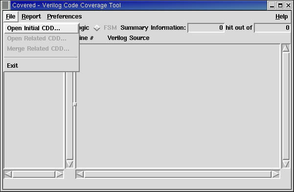
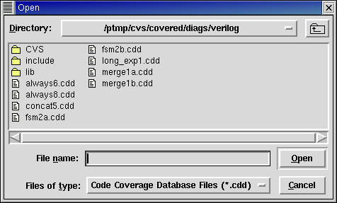

The file menu is used to open a new CDD file, open a related CDD file (derived from the same design as the currently opened CDD file, or merge a related CDD file with the contents of the currently opened CDD file. Additionally, the user selects this menu bar to exit the Covered report viewer GUI. Figure 1 shows the file menu contents within the main window.
Figure 1. The File Menu
This menu option is only available when the GUI is first invoked and a CDD file has not been previously loaded. Use this option to load an initial CDD file into the GUI for analyzing a design. When this option is selected, a standard file window is displayed allowing the user to select a CDD file to open (see Figure 2). At this point, any CDD file from any design can be opened.
Figure 2. The Open/Merge CDD Selection Window
